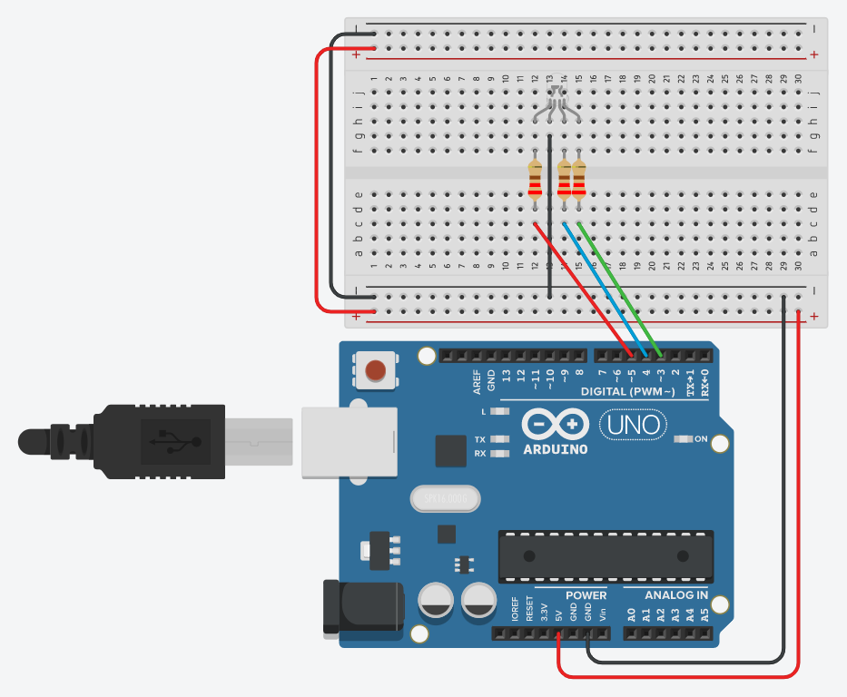

Plaats een RGB led op pinnen 3 (rood), 4 (groen) en 5 (blauw). Deze keer sturen we niet actief laag. Maak een programma dat door de 7 basismengkleuren heen loopt. Elke kleur moet 1 seconde zichtbaar zijn.
Een periode van een signaal is één volledige cyclus die steeds wordt herhaald. De eenheid is seconden. In dit geval is de periode 7 seconden.
De relatie tussen frequentie en periode is als volgt: F = 1/T.
De frequentie is hier dus 1/7s ofwel ongeveer 0.143Hz

Sla je oefening op.
Overloop volgende checklist om je oefening zelf te evalueren:
Volgens het schema is dit een common cathode RGB led:
de gemeenschappelijke pin gaat rechtstreeks (zonder weerstand) naar de
vaste GND-rail, en elk kleurkanaal gaat via zijn eigen weerstand naar
een Arduino-pin. Dit is dus actief hoog ("niet actief
laag", zoals de opgave aangeeft): HIGH zet een kleurkanaal
aan, LOW zet het uit.
De 7 basismengkleuren zijn alle combinaties van rood/groen/blauw behalve "alles uit": R, G, B, R+G (geel), G+B (cyaan), R+B (magenta) en R+G+B (wit). Elke combinatie blijft 1 seconde staan, dus de periode van 7 seconden klopt met de 7 kleuren uit de opgave hierboven.
const int roodPin = 3;
const int groenPin = 4;
const int blauwPin = 5;
// 7 basismengkleuren: alle combinaties van R/G/B behalve "alles uit"
const bool kleuren[7][3] = {
{1, 0, 0}, // rood
{0, 1, 0}, // groen
{0, 0, 1}, // blauw
{1, 1, 0}, // geel
{0, 1, 1}, // cyaan
{1, 0, 1}, // magenta
{1, 1, 1}, // wit
};
void setup() {
pinMode(roodPin, OUTPUT);
pinMode(groenPin, OUTPUT);
pinMode(blauwPin, OUTPUT);
}
void loop() {
for (int i = 0; i < 7; i++) {
digitalWrite(roodPin, kleuren[i][0]);
digitalWrite(groenPin, kleuren[i][1]);
digitalWrite(blauwPin, kleuren[i][2]);
delay(1000); // elke kleur 1 seconde zichtbaar
}
}